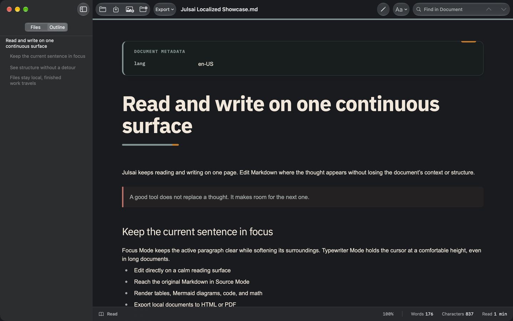

Write in the flow.
Read, edit, and return to Markdown—on one continuous surface.
Free · macOS 14+
Plain text
a brighter place
to think.

One document.
Three ways to work.
Read, edit, or view the source—without changing files or losing your place. Julsai keeps it simple and close to your Markdown.
A Quiet Morning
The morning light was softer today. I opened my notebook and let the thoughts arrive without hurry.
Good writing is a conversation with your future self.
- Clear words
- A calmer mind
- A more open tomorrow
That’s why I keep a journal.
Interactive website example · not saved to a file
Keep the sentence.
Keep the context.
Focus Mode keeps the active paragraph clear while softening its surroundings. Typewriter Mode holds the cursor at a comfortable height, even in long documents.
The airport was quiet, and the early light made everything feel possible.
A good tool does not replace a thought.
It makes room for the next one.
So I opened Julsai and kept writing,
one sentence at a time.
Next: 0.5.4 · In review
Find in your document.
Write in 33 UI languages.
We’re preparing the next release with document search and a localized interface in 33 languages.
Julsai 0.5.3 is currently available with 25 UI languages on the Mac App Store.
Structure, without
the detour.
Tables, diagrams, code blocks, and more—right in your document. Keep structure inside the page, not in separate tools.
| Language | Type | Status |
|---|---|---|
| Markdown | Plain text | Always |
| Diagrams | Mermaid | In document |
| Export | HTML · PDF | Keep one file |
const thought = "Keep writing.";
console.log(thought);Keep code blocks alongside your prose.
flowchart LR
Draft --> Edit --> ShareIn Julsai, Mermaid source becomes a diagram inside the document.
Finish here. Share anywhere.
Export a document to HTML or PDF in Julsai. Your Markdown remains the source.
This website example does not export files.
Your files
remain yours.
No account. No ads. No operator-controlled document server.
Where are my files stored?
In locations you choose on your Mac. External links and remote media may use the network; see our privacy policy.
Can I use my existing Markdown?
Yes. Open your Markdown or text files and move between reading, editing, and source. Three color styles—Julsai, Cyberpunk, and Postal Editorial—and 75–200% document zoom help you find a comfortable view.
What does the next update add?
Version 0.5.4 is in review. It adds Find in Document in the upper-right toolbar, 33 UI languages, and the refined icon. Find in Folder remains a separate sidebar action.